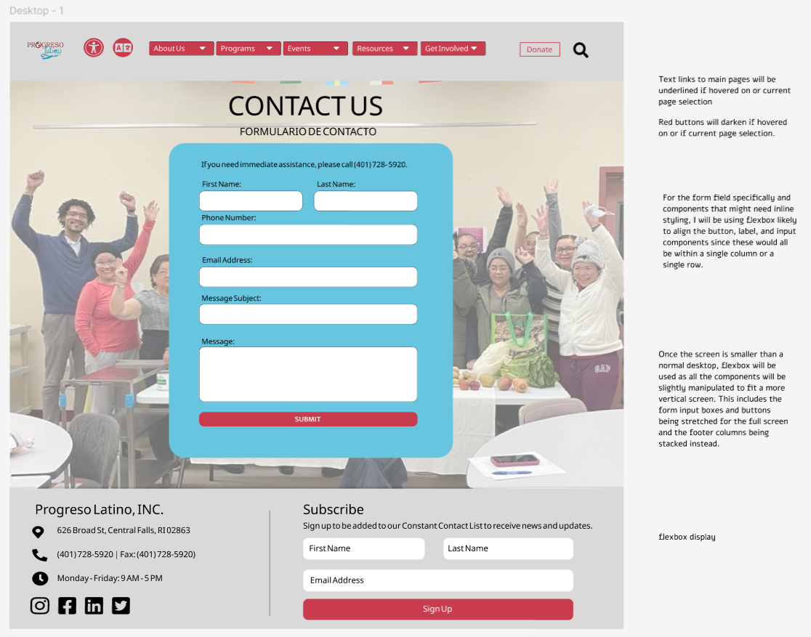
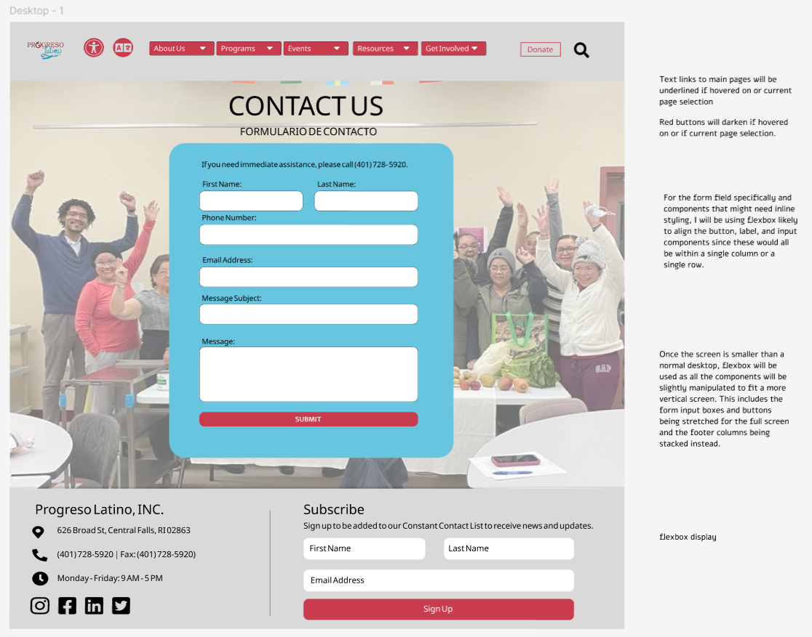
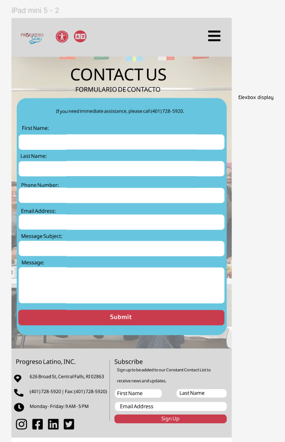

Desktop Version

Incorporating responsiveness into the redesign of a contact page in a case study
UX Researcher
Student in CSCI 1300
3 Weeks
Case study on responsive redesign.
To fully understand the process of redesigning a website, as well understanding responsive design, In this project, I decided to use to context of the Progreso Latino website as my site for redesign, particularly their Contact Us page.
I chose this webpage because it has a simple interface and clearly displayed goals, but it is not properly designed for easy user navigation or readability.
WebAIM WAVE detected some accessibility issues, including missing form labels, empty links, and missing alternative text for an image map area. I agree with the issues detected, such as the missing form labels, that make it difficult for people using screen readers to fill out the contact form if they are unable to tell which input areas are for what information. Another issue was the “empty links”, which signaled the social media icon links that did not have any text on them. In this case, the classification of the issue is misleading, but it is still an issue as it’d be important to make the link as one directing users to Instagram or X or another platform for screen readers users or users that might not recognize the logos of these platforms. Overall, I do think it did a good job at detecting most of the accessibility issues. I do feel like there were some aspects it might’ve missed like the text being slightly too small, particularly the form labels.
To begin the redesigning process, I first created a style guide for my redesign and then created three mockups: Desktop, Tablet, and Phone.




The final step of the project is the solution. I construct my redesign, keeping in mind responsiveness and overall usability.
Final Link to Redesign: https://sguarisma.github.io/progresoL-redesign/